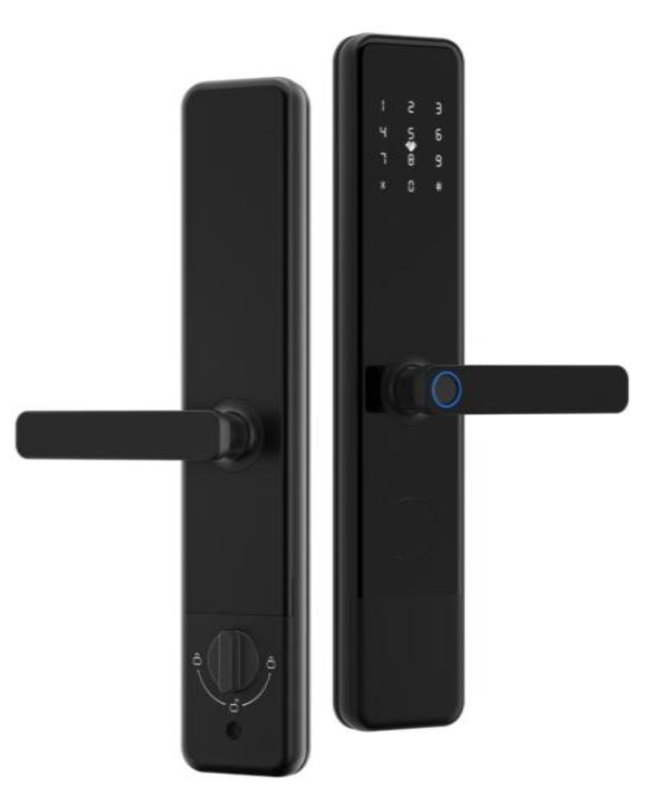
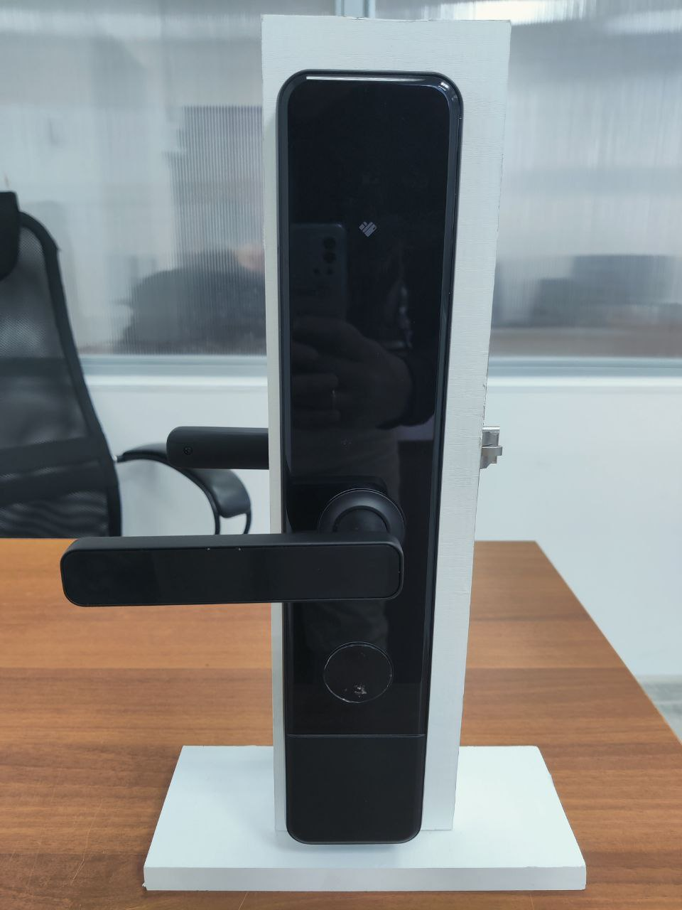
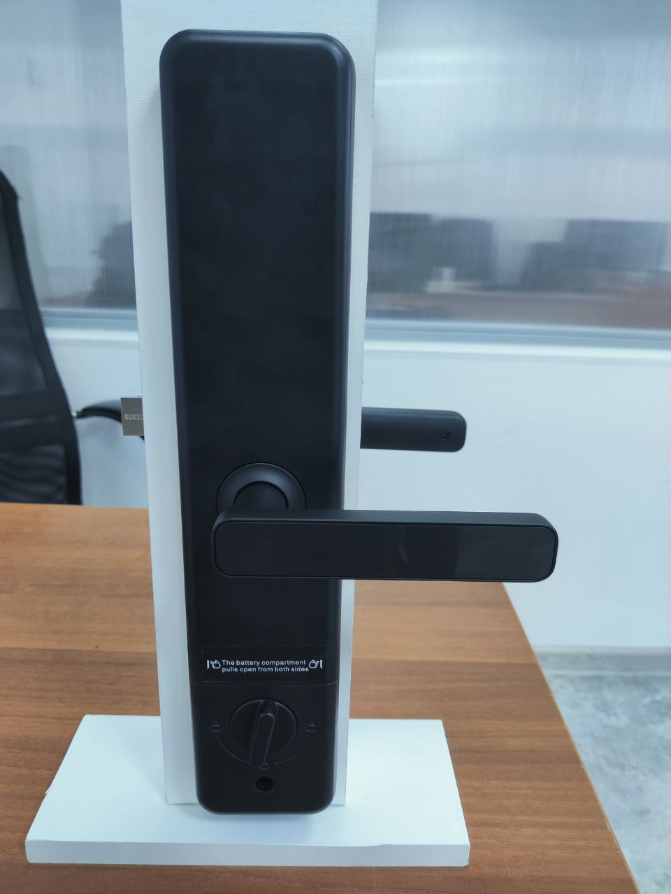
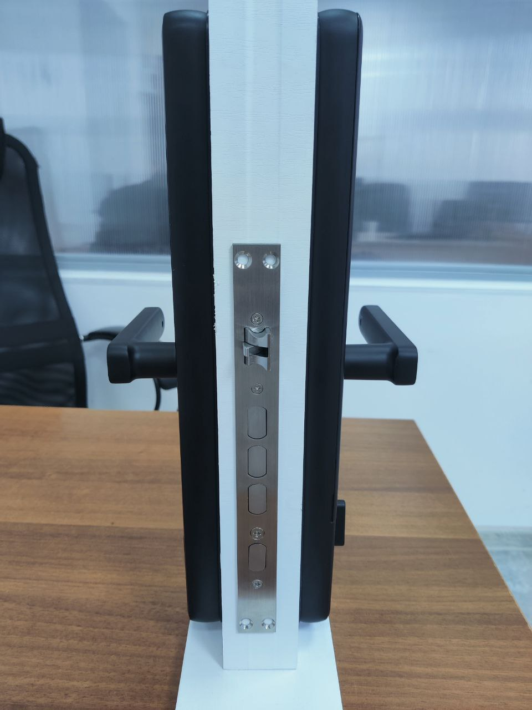
Вход в Личный кабинет осуществляется через сайт lk.flatsharing.biz.
Приложение Flatsharing Business для управления личным кабинетом с телефона скачать можно по ссылкам ниже:
Скачать приложение для установки на Android телефоны HONOR / HUAWEI. ⬇️ Flatsharing Business
Введите номер телефона агентства и нажмите на кнопку Авторизация.
В случае отсутствия Личного кабинета - выберите кнопку Регистрация и заполните данные.
На указанный номер телефона поступит код доступа, по которому вы сможете войти в личный кабинет.
Далее, вы попадаете на главную страницу личного кабинета, где будут отображены все ваши апартаменты,
добавленные в систему.
Обзор личного кабинета
В первую очередь, необходимо настроить Ваш Личный кабинет.
Раздел Настройки содержит три вкладки:
Основные / Интеграции / Уведомления:
Основные:
Введите название агентства, загрузите логотип и укажите контактный телефон для
заселения.
 При желании, установите ☑️
мгновенное бронирование, что бы Гость не передумал, ожидая Вашего
подтверждения о бронировании.
При желании, установите ☑️
мгновенное бронирование, что бы Гость не передумал, ожидая Вашего
подтверждения о бронировании.
При этом, этого необходимо настроить синхронизацию с
другими площадками бронирования с помощью менеджера каналов (шахматки), такие как -
Realty Calendar, Travel Line, Bnovo. Установите максимальные и минимальные сроки для мгновенного
бронирования.
Вы можете предоставить Гостям возможность оставлять отзывы об объектах на площадке бронирования –
FLATSHARING. Для этого, необходимо активировать кнопку ☑️ Честный владелец – и тогда
Ваши
объекты будут отмечены
специальным знаком  .
.
По желанию, загрузите свой договор оферты между арендодателем и Гостем.
Он будет направлен Гостю в виде ссылки при создании Стандартной аренды.
По умолчанию, отправляется наша форма - Договор (оферта) аренды объекта.
Вы можете использовать наш договор как шаблон: скачайте его, внесите правки и загрузите на площадку в
формате
PDF !
Так же, есть возможность загрузить инструкцию для Гостей.
Если хотите избежать множества однотипных вопросов – все ответы можно прописать в инструкции:
схема проезда, информацию по использованию электронного замка, и по штрафам.
Ее, так же как и договор, Вы можете отредактировать - скачайте шаблон, внесите правки и
загрузите в формате PDF в основных настройках, а при необходимости – в настройках по каждому
объекту -
загрузить отдельный договор и инструкцию.
Обратите внимание! Для гостей с площадки бронирования Flatsharing – используется Договор (оферта) аренды объекта.
Для получения оплаты от Гостей при создании Стандартной аренды - прикрепите реквизиты банковской
карты. Задайте произвольное наименование и заполните все остальные поля. Можно указать несколько карт.
При создании стандартной аренды Вы сможете выбрать карту из раскрывающегося списка для приема
оплаты.
Во вкладке Интеграция можно настроить интеграцию с шахматками: Realty Calendar, Travel Line, Bnovo.
Объекты с настроенной интеграцией помечаются значком -  .
.
Настройте бота для заселения через месенджеры Телеграмм/WhatsApp. Логи агентств позволяют настроить телеграмм-бота, который будет уведомлять об этапах аренды и сообщениях от Гостей.
Во вкладке Уведомления настройте дополнительный способ получения уведомлений о заявках на заселение: по смс или на электронную почту.

В разделе Мои объекты - отображены все Ваши Объекты, подключенные к сервису.
Есть три вида отображения - ячейками, списком и календарь занятости.
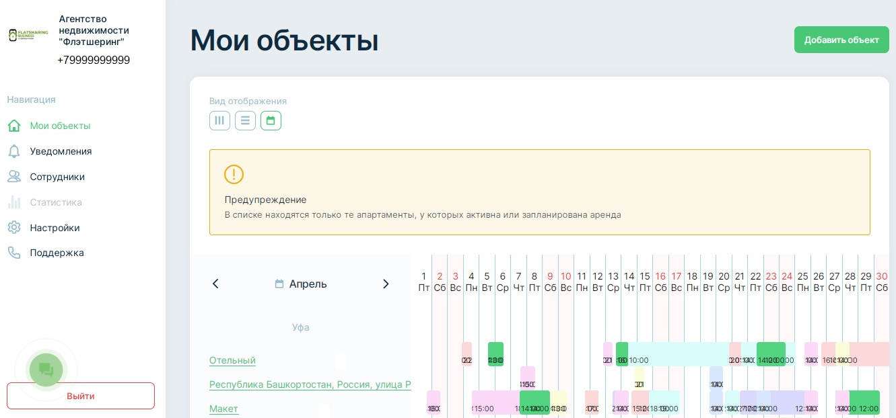Внимание !
В календаре находятся только те апартаменты, у которых активна или запланирована аренда с площадки бронирования FLATSHARING.
Вы можете вручную Добавить объект, либо сделать выгрузку объектов из шахматки
Рядом с фотографией объекта отображается его статус:
Доступно удаленное заселение - наличие электронных замков или кей-боксов на объекте. 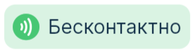.
Выставлен на площадке бронирования - статус верификации, отображение на площадке для бронирования.
Во вкладке Чат – отображаются текущие и предстоящие аренды, переписка с Гостем и его данные.
Во вкладке История - отображаются все завершенные аренды по Объекту и данные гостей. Кликнув по любой аренде – открывается окно чата с Гостем.
Во вкладке Настройки - необходимо заполнить все данные по Объекту, которые будут отображаться на
площадке бронирования FLATSHARING.
Необходимо прописать полный адрес, произвольное наименование для удобства поиска, например, квартира у
озера,
стоимость проживания, сумму залога, загрузить минимум 5 фотографий квартиры, обозначить количество комнат,
спальных мест и справочную информацию для гостей и другие.
При необходимости, прикрепить
индивидуальный
договор и
инструкции к объекту.
Внимание !
Для публикации на площадке необходимо заполнить все поля в настройках Объекта, сохранить изменения и Ваш объект отправится на модерацию. Без заполнения всех данных, Ваш объект может быть отклонен.
Во вкладке Оборудование – укажите коды от тамбурной двери, домофона или кей-бокса. Ниже - добавление и управление электронным замком.
Давайте рассмотрим подробнее – как управлять электронным замком и создавать коды доступа.
Выбираем объект и переходим во вкладку оборудование.
Здесь отображается информация об уровне сигнала со шлюзом, и заряд замка, есть возможность удалённо открыть замок. При помощи кнопки подробнее - можно добавить код доступа и ic-карту к замку, просматривать историю действий и менять время автоблокировки.
При создании аренды - код доступа генерируется автоматически и направляется Гостю вместе с информацией о заселении.
Что бы создать новый код доступа, нажимите кнопку - Добавить. Введите наименование, например – горничная. Выберите из раскрывающегося списка тип, например - временный. Укажите период активности кода.
Автоматически генерируется 7-ми или 9-ти значный код. Если хотите – можете установить свой 4-х значный код, для этого поставьте ☑️ в поле - использовать собственный код доступа.
О всех событиях с замком на телефоне будут отображаться пуш-уведомления от приложения FLATSHARING бизнес, а так же храниться в приложении во вкладке – история.
После разблокировки, замок автоматически блокируется через несколько секунд. Количество секунд вы можете указать во вкладке – прочее.
Если нет времени ждать автоблокировку – можно принудительно заблокировать замок, удерживая несколько секунд кнопку # на панели замка. При этом вы получите пуш-уведомление - замок заблокирован электронным ключом.
Если неправильно ввели код от замка 5 раз подряд – панель замка блокируется для ввода на 5 минут. Но его по-прежнему можно разблокировать удалённо через приложение. Для удаления неправильно введенной цифры - нажмите на кнопку - * на панели замка.
Шлюз должен быть всегда подключен к сети Интернет и к сети питания.
Лампочка индикатор на шлюзе должна мигать синим цветом.В личном кабинете цветом отображается уровень сигнала со шлюзом.
🟢 - Сигнал Отличный
🟡 - Сигнал Приемлемый
🟠 - Сигнал Слабый, возможна частичная или полная потеря функционала, связанного со шлюзом.
(Означает, что либо скорость интернета слабая, должна быть не менее 70 МБИТ, либо шлюз расположен далеко
от
замка, должен быть в радиусе не менее 5м от замка)
🔴 - Отсутствуют шлюзы поблизости.
У замка пропала связь со шлюзом, причины:
1) Шлюз выдернули с розетки, тем самым он выключен.
2) Шлюз подключен к розетке, но мигает красным, то есть возможно не оплачен интернет.
3) Шлюз подключен к розетке, но мигает красным, то есть возможно проблемы в работе роутера и раздачей вай фая.
4) Шлюз подключен к розетке и мигает красным, возможна была смена пароля роутера/Wi Fi.
Шлюз желательно располагать в не заметном для Гостей месте, во избежание отключения или хищения.
Уровень заряда замка не стоит доводить до 0, иначе замок придется открывать с помощью ключа. Либо нужно будет заряжать замок вручную через USB-кабель от Power-Bank. Поэтому , рекомендуем заменять батарейки хотя бы раз в год.
Просмотреть недоступные для бронирования даты можно во вкладке – Закрытые даты. Что бы закрыть период, в правом верхнем углу нажмите кнопку Закрыть дату и Ваш объект будет скрыт на указанный период.
Во вкладке Динамическое ценообразование отображается динамика цен из шахматки.
Оценки и комментарии Гостей об объекте расположены во вкладке – Отзывы.
Для заселения гостей - создайте аренду, нажав на кнопку Упрощенная аренда или Стандартная аренда
При создании Упрощенной аренды, Гостю будут отправлены:
Дата и время проживания
Коды доступа для заселения
Инструкция
Внимание !
При Упрощенной аренде с Гостем не подписывается договор, не принимается оплата и не загружаются паспортные данные.
Необходимо указать номер телефона Гостя, период аренды, количество гостей. Выбрать способ заселения.
ВСтандартную аренду входит подписание договора, верификация по паспорту и прием оплаты.
Для создания аренды - необходимо ввести номер телефона Гостя.
По умолчанию, установлена галочка ☑️ Получить паспортные данные Гостя.
Ему необходимо будет загрузить три фото - главная страница, страница с пропиской и сэлфи с паспортом.
Если Гость ранее уже был зарегистрирован в приложении – ему повторно делать и загружать фото паспорта не
нужно будет.
Они автоматически подгрузятся и отобразятся во вкладке Чат. ☑️ Галочку можно снять, если
паспортные
данные Гостя Вам не нужны.
Способ заселения – через какое приложение будет происходить общение с Гостем :
Через браузер компьютера или телефона по ссылке web.flatsharing.mobi
Через мобильное приложение FLATSHARING, которое, при необходимости, Гостю нужно будет скачать и установить на телефон.
Обратите внимание, что заселение через мобильное приложение FLATSHARING бесплатное и Гость автоматически становится Вашим рефералом.
Заселение с помощью Мессенджера платное и стоит 75
рублей,
которые спишутся с Вашего внутреннего баланса в Личном кабинете.
Предварительно необходимо пополнить баланс личного кабинета и создать Телеграмм-бота во вкладке
Интеграция .
Если по какой-то причине Объект не размещен на площадке бронирования (еще не прошел верификацию)
– Гостей можно заселять только с помощью Телеграмм-бота.
Указать периоды аренды, количество Гостей.
Из раскрывающегося списка выбрать договор и инструкцию.
Указать реквизиты для оплаты. При необходимости – запросить фотографию чека.
Укажите сумму аренды с учетом уборки и залог.
Поделитесь ссылкой удобным способом. Ссылку на аренду можно дополнительно
отправить любым удобным способом, скопировав ее во вкладке Чат.
Во вкладке Чат отображаются этапы аренды .
Первый этап - подписание договора, Гостю отправляются ссылки на договор аренды,
политику конфиденциальности и согласие на обработку данных.
Если он согласен с условиями – он должен в ответ написать слово – Да.
Второй этап – верификация. Автоматически запрашиваются и подгружаются фото паспорта Гостя. Необходимо проверить фото и подтвердить аренду при помощи кнопки .
Третий этап - оплата. Гостю отправляются данные по оплате. После получения денежных средств - арендодателю необходимо подтвердить оплату.
Затем Гостю приходят коды доступа в апартаменты и файл с инструкциями, если они были загружены .
В любой момент вы можете изменить время или отменить аренду.
Внимание !
Важно, что бы Гость авторизовался в приложении с тем номером телефона, на который Вы создавали аренду.
Инструкция по заселению Гостей
В разделе - Уведомления - отображаются заявки на заселение от площадки бронирования FLATSHARING и данные из шахматной системы, а также, последние действия в личном кабинете.
В разделе Сотрудники - можно дать доступ на выбранные Объекты Вашим сотрудникам. Для
этого необходимо
указать наименование, телефон сотрудника и указать какими объектами он может управлять.
Сотрудник сможет заходить в Личный кабинет под своим номером телефона. Интерфейс личного кабинета и
полномочия будут такие же, как у собственника, за исключением, создания новых объектов. Сотрудник полностью
самостоятельно может проводить заселение, создавать коды доступа от электронных замков, редактировать
объекты,
но не создавать новые. Для прекращения доступа в личный кабинет – нажмите кнопку Удалить.
Внимание !
У сотрудника будет полный доступ к объекту (создание/удаление кодов, удаленное открытие замка, управление заселениями.)
Раздел Баланс поделён на две части.
Во вкладке Баланс - отображается информация о денежных средствах, которые можно использовать на платные заселения через мессенджеры и другие платные услуги, отображается история расходов . Пополнение можно сделать с банковской карты.
Во вкладке Выплаты - отображается доход арендодателя от площадки бронирования FLATSHARING, за вычетом комиссии.
Вывод денежных средств на расчётный счёт осуществляется два раза в месяц на общих условиях -
автоматически . Для этого необходимо нажать кнопку Подключить выплаты и заполнить реквизиты. Если
КПП
нет - поставить ноль .
Обращаем внимание, что в первый платёж попадают операции прошедшие до 15-го числа, при этом
зачисление денежных средств осуществляется до 5-го числа следующего месяца .
Во второй платёж - попадают операции с 16-го числа по последний день месяца. В этом случае, денежные
средства поступят на карту
до 20-го числа следующего месяца. При переводе денежных средств на банковскую карту эквайринг
за вывод составит 1,5%.
Для вывода средств на банковскую карту самозанятым действуют такие же условия как и для юридических лиц.
Два раза в месяц, при предоставлении документов, подтверждающих оформление как самозанятого:
В разделе Мои рефералы - хранится список Ваших рефералов.
Гость становится рефералом, если Вы
его
заселили при
создании стандартной аренды, через мобильное приложение FLATSHARING. Для данного Гостя, при
бронировании через
площадку FLATSHARING - комиссия будет минимальной - 4%.
Реферальная система позволяет получать кэшбэк с последующей аренды Гостей в площадке бронирования
Флэтшеринг.
При повторном бронировании объекта этим же Гостем комиссия составит -50%, соответственно
7.5% для необорудованных удаленным доступом и
6% для объектов, где установлен умный замок/кейбокс.
Также, если Гость забронирует
квартиру не у Вас, с его первой аренды Вы получите кэшбек в виде бонусов, которыми можно
воспользоваться.
Баланс будет отображен на главной странице Личного кабинета.
В разделе Поддержка указана контактная информация нашей компании.
Как создать код доступа в квартиру
Скачать плиложение для установки на Android телефоны HONOR / HUAWEI. ⬇️ Flatsharing Connect
Площадка бронирования для гостей - "Flatsharing Аренда квартир"
Веб-приложение web.flatsharing.mobi
Видео инструкция по использованию приложения для гостей
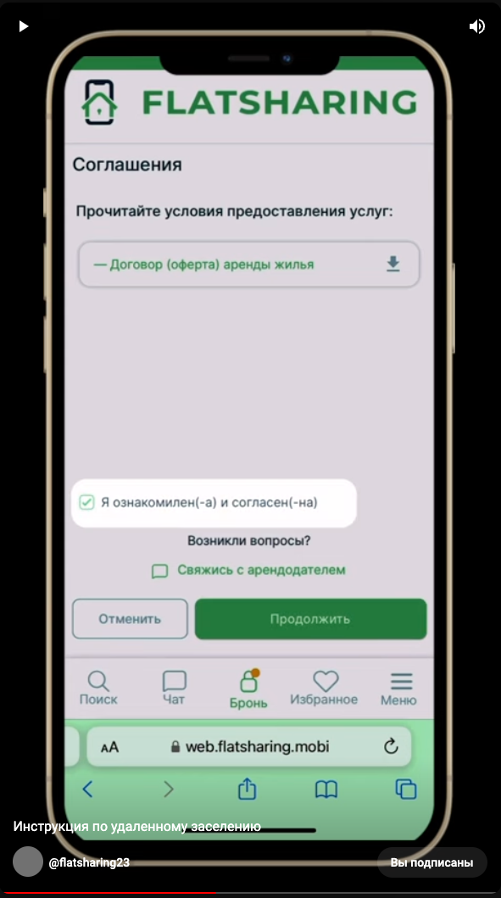Документы для сведения Гостей
Безопасно ли загружать гостю паспорт в приложении ?
Законом запрещено хранить документы или их копии, относящиеся к персональным данным.
При работе с паспортными данными гостей, советуем работать через систему Flatsharing, мы
зарегистрированы
в реестре операторов РОСКОМНАДЗОРА и Данные пользователей защищены исполнением федерального закона РФ от
27.07.2006 №152-ФЗ "О персональных данных". Регистрационный номер ООО "ФЛЭТШЕРИНГ" (ИНН 0277078222) в
реестре операторов, осуществляющих обработку персональных данных: 2-21-008063, приказ №179 от 26.11.2021
Можно ли создать для одного гостя несколько аренд ?
Стандартную/упрощённую аренду можно создавать на 1 и тот же номер телефона на разные объекты и на
одинаковые даты в личном кабинете арендодателя. Так же можно создавать аренды и у другого арендодателя
на
одни и те же даты.
⚠️ Важное условие:⚠️
Самая первая созданная аренда на этот номер телефона, должна быть доведена до конца (пройдены этапы
подписания договора, получения паспортных данных, принятие оплаты, отправка кодов доступа), т.е. аренда
должна находится либо на этапе "Ожидают начала аренды" либо на этапе "В аренде".
Нужно ли нам изменить под оферту свой договор или использовать ваш?
Да, если вы используете свой договор, он должен быть как оферта, т.к. договор подписывается онлайн. Конечно, можете взять наш ⬇️ договор и добавить свои пункты. Для наиболее полного содержания можно согласовать с юридическим отделом Флэтшеринг. Использовать только наш договор необязательно, так как мы не можем предусмотреть все ваши условия бронирования
Платное заселение через мессенджеры
Стоимость заселения через WhatsApp и Telegram 75 руб/заселение.
Деньги будут списываться с пополняемого баланса в Личном кабинете.
Что бы заселять гостей бесплатно - Вы можете воспользоваться заселением через Flatsharing и его версию
для браузера. В Личном кабинете, как и всегда, выбираете упрощенную либо стандартную аренду;
Вместо WhatsApp или Telegram выбираете “Мобильное приложение”;
Гость получит ссылку на приложение, где ему откроется ваш объект с уже созданной арендой.
Все что остается клиенту - это выполнить ваши требования по договору, документам, оплате и получить коды
доступа.
Один в один как в мессенджерах, но с юридической точки зрения более надежный вариант заселения гостей
А как же быть с теми, кто не захочет скачивать приложение?
Гость сможет выбрать скачивать мобильное приложение или открыть с браузера.
Какие бонусы я получу дополнительно?
Тех гостей, которых вы заселяете через приложение Flatsharing система автоматически запомнит как вашего
реферала. Когда этот гость вернется к вам обратно через Flatsharing, то комиссия за такого гостя
снизится
на 50% (т.е будет или 6% или 7,5%)
Заселения через приложение Flatsharing будет выгодней не только потому, что остается бесплатной
услугой, но еще и благодаря возможности наращивать базу своих рефералов и принимать их по сниженной
комиссии в будущем
Как удержать с гостя залог ?
Когда гость бронирует Ваш апартамент через приложение Flatsharing,
залог можно брать сразу 🥳
Весь период аренды залог хранится на стороне Flatsharing. Его Вы можете удержать в течение суток после
окончания аренды, нажав на кнопку “Удержать” в Личном кабинете, либо он возвращается гостю
автоматически.
Чтобы принимать залог в настройках объекта, в поле “Залог” пропишите его сумму.
Если не указывать залог, в приложении Ваш объекты будет с пометкой "Без залога"
Как привязать WhatsApp к личному кабинету?
Что необходимо для подключения:
Аккаунт в Facebook
Завести номер для подключения. Можете использовать ваш текущий, но нужно будет учитывать тот факт, что
обратно отвязать вы его не сможете. Он будет только работать внутри личного кабинета "Флэтшеринг".
Пользоваться мобильным приложением Whats App и Whats App Bussiness будет невозможно.
Чаты с гостями можно будет вести только с личного кабинета "Флэтшеринг"
Этапы подключения:
Оплатить за Whats App
Предоставить номер, который будет привязан к ЛК Условия:
Номер не должен быть привязан к Whats App (Должен быть удаленный аккаунт в приложениях, либо новый номер.)
Быть с нами на связи во время подключения. После настроек технической поддержки, необходимо произвести
настройки в Facebook (либо предоставить доступ в тех. поддержку) Настройка может занять до 2 суток
Как привязать Телеграмм к личному кабинету?
Для того чтобы привязать телеграмм к личному кабинету, необходимо:
Создать бота в телеграмм. Необходимо найти Бота @BotFather
Чтобы сделать Бота для агентства, агентству нужно создать бота при помощи команд /start /newbot - создайте
нового бота
Далее, необходимо назвать Бота, желательно указать название агентства. Бот просит, чтобы дали тег Вашему
Боту, должно заканчиваться на слово bot Например Flatbot, Domabot
Теперь давайте выберем имя пользователя для вашего бота. Оно должно заканчиваться на ""бот"". Вот так,
например: Тетрис-бот или тетрис-бот. Если имя занято, просит дать другое имя. Как только зададите имя, Бот
выдаст данные токен, например 5235565988:AAETY-hsY5YVD3GjQuE6fTdMWnYSx5ODZdg
В личном кабинете Flatsharing, в разделе Настройки – Интеграции – телеграмм, нужно поставить токен и
сохранить
Как настроить уведомления в телеграмм?
Для получения уведомлений в телеграмм необходимо:
Создать канал в ТГ
Выбрать название канала и нажать далее
Тип канала указать частный
Далее необходимо добавить Вашего бота с правами администратора
Для этого в открывшемся диалоге необходимо нажать на название канала, администраторы, добавить и в поиске
найти по названию своего бота(либо скопировать название бота в @botfather). Установить все права, кроме
назначения администраторов.
Далее написать сообщение в канале /chatid и отправить. Необходимо данное сообщение переслать в личные
сообщения боту. Чтобы бот выдал логи агентств(для интеграции с Flatsharing).
В ответном сообщении выйдет
-100... Копируем данное сообщение и переходим в настройки Flatsharing, интеграции, логи агентств.
Вставляем данное сообщение и сохраняем изменения
Условия сотрудничества
Регистрация на площадке бронирования и размещение объектов – бесплатно Комиссия по факту заселения: от 0% до 18%, в соответствии п.6 ДОГОВОРА-ОФЕРТА
| Тип заселения | Комиссия | Эквайринг |
|---|---|---|
| Рефералы (гости, скачавшие приложение по приглашению арендодателя) | 0% | 4% |
| Удаленное заселение и мгновенное бронирование | 12% | 0 |
| Мгновенное бронирование | 15% | 0 |
| Традиционное заселение | 18% | 0 |
Подключение выплат на расчетный счет
Для вывода средств на банковскую карту самозанятым действуют такие же условия как и для юридических лиц.
Два раза в месяц, при предоставлении документов, подтверждающих оформление как самозанятого
Реферальная программа
У нас появилась реферальная программа «Для арендодателей», которой Вы можете воспользоваться уже сейчас.
Рассказываем подробнее:
от Вас - рекомендация своим коллегам и друзьям электронных замков от нашей компании Флэтшеринг
от нас - за каждый купленный замок по Вашему промокоду вознаграждение в размере 1000 р.
Вашему другу - скидка 500 р. на каждый замок
1000 р. Вы в можете использовать:
в виде скидок на последующие покупки
пополнить баланс в ЛК
либо получить деньги на расчетный счет (необходимо составить договор)
❗️Самое главное❗️программа действует так же на все дальнейшие покупки Вашего приведенного коллеги!
Если остались вопросы или Вы уже передали промокод другу, то свяжитесь с нашей тех. поддержкой, чтобы уведомить нас @flatsharing_support 🤗
Франшиза
Флэтшеринг приглашает вас к сотрудничеству и даёт уникальную возможность стать дистрибьютором электронных замков и франчайзи-партнёром!🤝
Давайте разберёмся, какие преимущества при этом вы получите.
Свяжитесь с нами по телефону либо заполните заявку для уточнения данных о занятости вашего региона и для расчета специальных условий сотрудничества для вас!🖇
Телефон для связи:+7 967 555-98-37
Оптовые закупки
Приглашаем вас к сотрудничеству и предлагаем воспользоваться возможностью закупок электронных замков по
оптовым ценам!🤝
Что вы получаете?
📍 Преимущества в цене. Вы получаете доступ к закупке электронных замков по оптовым ценам.
📍 Новый бизнес. У вас будет ценовое преимущество на территории работы и возможность иметь стабильно растущий заработок.
📍 Закрытие личных потребностей. Вы можете обеспечить «умными» электронными замками все объекты, которые находятся в Вашем управлении по ВЫГОДНОЙ цене.
📍 Совместные покупки. Объединяйтесь с другими, экономьте вместе!
📍 Фирменное наименование. Право использовать фирменное наименование и товарные знаки Флэтшеринг (FLATSHARING) при продаже и распространении продуктов.
📍 Быстрая поставка. Поставка больших объемов оборудований осуществляется с резервного склада, обеспечивая вам оперативность и уверенность.
📍 Легкий старт. Вы можете начать работать с небольшими партиями замков. Скидка складывается из скидки за единовременный выкуп и выкуп предыдущего месяца.
Свяжитесь с нами для сотрудничества и для расчета специальных условий только для вас!🖇
Телефон для связи:+7 967 555-98-37
Актуальные цены


Надежный электронно-кодовый замок, антивандальное крепление обеспечивает максимальную защиту помещения от
взлома.
Имеется аварийный ключ для резервного копирования. В комплект включен 5-ригельный механизм 22*240*60*93.
Входит в комплект:
Как видно из рисунка, в комплект поставки одного устройства входят:
Характеристика
Размеры

Внимание !
Если корпус замка (Вашей двери) отличается по размеру от корпуса представленного замка, то можно приобрести дополнительную планку.
Видеообзор
Установка Антивандального замка
Подготовка
1. Удалите старый замок
Подготовьте дверное полотно к установке устройства – произведите фрезеровку в соответствии со схемой врезки
2. Сориентируйте ручки умного замка под открывание двери
После фрезеровки необходимо сориентировать ручку замка под направление открывания двери.
3. Направление ручки замка
Для изменения направления, необходимо ослабить крепежные винты ручек с внутренней стороны и повернуть ручку
на 180°
Внимание !
Необходимо удостовериться в том, что стрелка над втулкой расположена в положении наверх.
Монтаж изделия в дверь
1. Установка врезного замка
Зафиксируйте врезной замок в дверном полотне при помощи комплектных шурупов
2. Установка штока и гильзы
Установите на наружную пластину шток для управления защелкой и ригелем, так же гильзы для стяжных винтов
Внимание !
Шток оснащен пружиной, которую необходимо поставить в втулку внутренней пластины.
3. Установка наружной пластины в дверь
После установки уплотнительных резинок, наружную пластину необходимо установить на дверное полотно,
пропустив интерфейсный кабель через верхнее отверстие во фрезе.
4. Установка батарей
Необходимо снять с внутренней пластины батарейный отсек. Для этого потяните его вверх. После установки
батарей, необходимо поставить отсек на место. Не забудьте прокинуть кабель батарейного отсека в пластину.
5. Фиксация прижимных пластин
Необходимо установить внутреннюю пластину и зафиксировать обе прижимные пластины стяжными винтами.
Батарейный отсек также зафиксируется винтом.
Внимание !
После установки батарей и фиксации пластин, проверьте ход всех защелок (для этого поверните ручку на внутренней пластине вниз), ригеля (поднимите ручку вверх). Если механика отрабатывает плавно, без сопротивления, то сборка замка была проведена успешно и изделие готово к дальнейшей настройке.
ТЕХНИЧЕСКИЕ ДАННЫЕ:
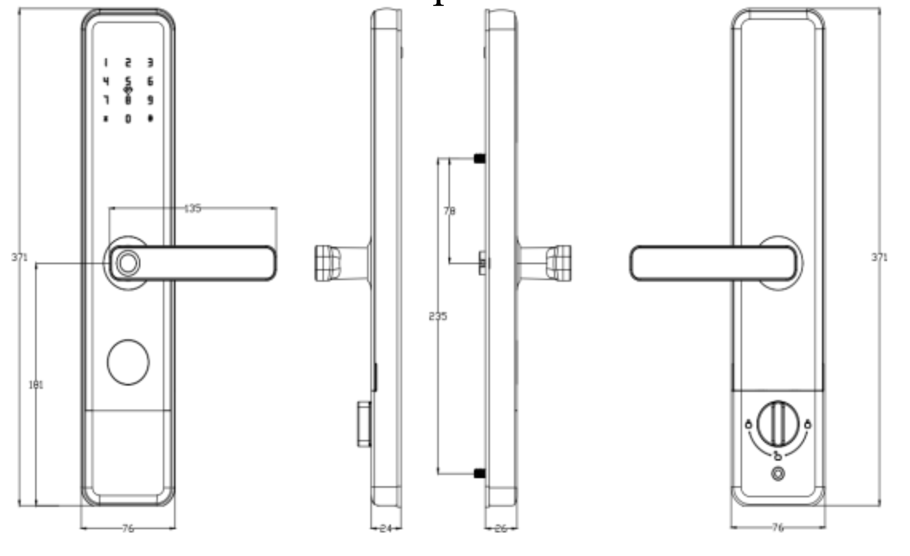Упаковка:
Установка Антивандального замка
Подготовка
1. Удалите старый замок
Подготовьте дверное полотно к установке устройства – произведите фрезеровку в соответствии со схемой врезки
2. Сориентируйте ручки умного замка под открывание двери
После фрезеровки необходимо сориентировать ручку замка под направление открывания двери.
3. Направление ручки замка
Для изменения направления, необходимо ослабить крепежные винты ручек с внутренней стороны и повернуть ручку
на 180°
Внимание !
Необходимо удостовериться в том, что стрелка над втулкой расположена в положении наверх.
Монтаж изделия в дверь
1. Установка врезного замка
Зафиксируйте врезной замок в дверном полотне при помощи комплектных шурупов
2. Установка штока и гильзы
Установите на наружную пластину шток для управления защелкой и ригелем, так же гильзы для стяжных винтов
Внимание !
Шток оснащен пружиной, которую необходимо поставить в втулку внутренней пластины.
3. Установка наружной пластины в дверь
После установки уплотнительных резинок, наружную пластину необходимо установить на дверное полотно,
пропустив интерфейсный кабель через верхнее отверстие во фрезе.
4. Установка батарей
Необходимо снять с внутренней пластины батарейный отсек. .
5. Фиксация прижимных пластин
Необходимо установить внутреннюю пластину и зафиксировать обе прижимные пластины стяжными винтами.
Батарейный отсек также зафиксируется винтом.
Внимание !
После установки батарей и фиксации пластин, проверьте ход всех защелок (для этого поверните ручку на внутренней пластине вниз), ригеля (поднимите ручку вверх). Если механика отрабатывает плавно, без сопротивления, то сборка замка была проведена успешно и изделие готово к дальнейшей настройке.
Ударопрочный сплав и нержавеющая сталь.
Для установки нужно заменить только накладки и личинку замка, соответственно минимальные работы по врезке.
Отлично подойдет на двери с системой "Паук"
В комплект поставки одного устройства входят:
Характеристика
Размеры
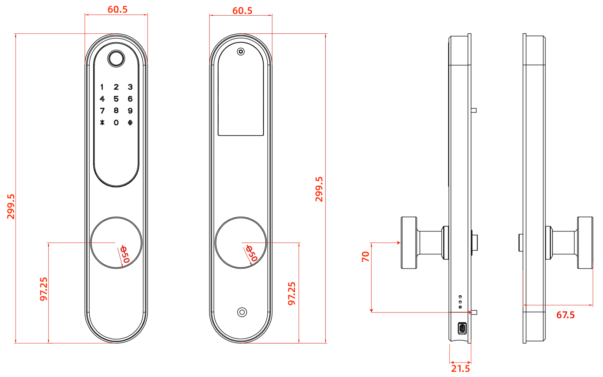Установка Универсального замка
Подготовка
1. Удалите старый замок
Подготовьте дверное полотно к установке устройства – произведите фрезеровку в соответствии со схемой врезки
2. Сориентируйте ручки умного замка под открывание двери
После фрезеровки необходимо сориентировать ручку замка под направление открывания двери.
3. Направление ручки замка
Для изменения направления, необходимо ослабить крепежные винты ручек с внутренней стороны и повернуть ручку
на 180°
Внимание !
Необходимо удостовериться в том, что стрелка над втулкой расположена в положении наверх.
Монтаж изделия в дверь
1. Установка врезного замка
Зафиксируйте врезной замок в дверном полотне при помощи комплектных шурупов
2. Установка штока и гильзы
Установите на наружную пластину шток для управления защелкой и ригелем, так же гильзы для стяжных винтов
Внимание !
Шток оснащен фиксатором, которую необходимо закрепить.
3. Установка наружной пластины в дверь
После установки уплотнительных резинок, наружную пластину необходимо установить на дверное полотно,
пропустив интерфейсный кабель через верхнее отверстие во фрезе.
Внимание !
Установите переходник евроцилиндр на шток и зафиксируйте в корпусе замка
4. Установка батарей
После соединения двух пластин и стягивания винтов необходимо установить батареи и закрыть крышку батарейного
отсека

5. Фиксация прижимных пластин
Необходимо снять с внутренней пластины крышку батарейного отсека, установить внутреннюю пластину и
зафиксировать обе прижимные пластины стяжными винтами.
Одна из самых востребованных моделей, так как тип замка универсален и прост в использовании. Подходит на левосторонние и правосторонние двери из дерева и(или) металла любой толщины. Так же замок имеет функцию автоблокировки.
Входит в комплект:
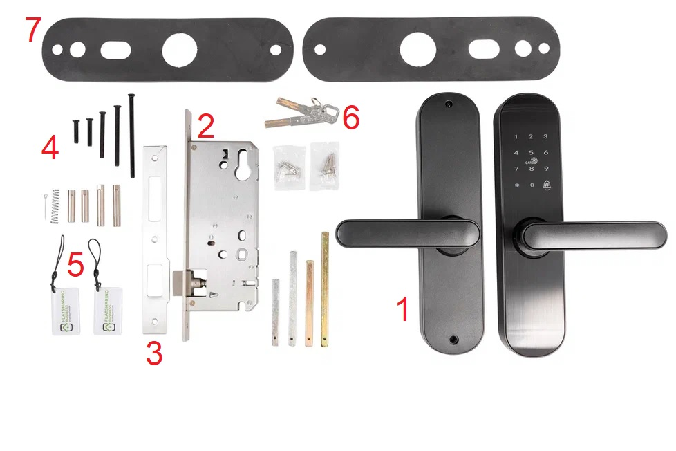Как видно из рисунка, в комплект поставки одного устройства входят:
Характеристика
Размеры
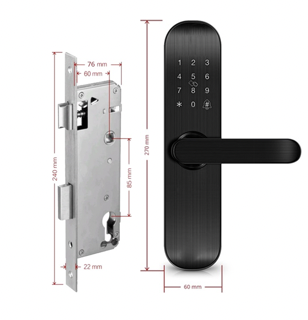Внимание !
Если корпус замка (Вашей двери) отличается по размеру от корпуса представленного замка, то можно приобрести дополнительную планку.
Видеообзор
Установка Отельного замка
Подготовка
1. Удалите старый замок
Подготовьте дверное полотно к установке устройства – произведите фрезеровку в соответствии со схемой врезки
2. Сориентируйте ручки умного замка под открывание двери
После фрезеровки необходимо сориентировать ручку замка под направление открывания двери.
3. Направление ручки замка
Для изменения направления, необходимо ослабить крепежные винты ручек с внутренней стороны и повернуть ручку
на 180°
Внимание !
Необходимо удостовериться в том, что стрелка над втулкой расположена в положении наверх.
Монтаж изделия в дверь
1. Установка врезного замка
Зафиксируйте врезной замок в дверном полотне при помощи комплектных шурупов
2. Установка штока и гильзы
Установите на наружную пластину шток для управления защелкой и ригелем, так же гильзы для стяжных винтов
Внимание !
Шток оснащен пружиной, которую необходимо поставить в втулку внутренней пластины.
3. Установка наружной пластины в дверь
После установки уплотнительных резинок, наружную пластину необходимо установить на дверное полотно,
пропустив интерфейсный кабель через верхнее отверстие во фрезе.
4. Установка батарей
Необходимо снять с внутренней пластины батарейный отсек. Для этого потяните его вверх. После установки
батарей, необходимо поставить отсек на место. Не забудьте прокинуть кабель батарейного отсека в пластину.
Видео инструкция
5. Фиксация прижимных пластин
Необходимо установить внутреннюю пластину и зафиксировать обе прижимные пластины стяжными винтами.
Батарейный отсек также зафиксируется винтом.
Внимание !
После установки батарей и фиксации пластин, проверьте ход всех защелок (для этого поверните ручку на внутренней пластине вниз), ригеля (поднимите ручку вверх). Если механика отрабатывает плавно, без сопротивления, то сборка замка была проведена успешно и изделие готово к дальнейшей настройке.
Замок сделан в форме телескопического цилиндра.
Компактный, лаконичный и современный внешний вид замка подойдёт к дизайну любой двери.
Установка замка занимает всего 15 минут, при этом нет необходимости менять корпус замка.
Подходит для дверей разных производителей, а также разного материала изготовления (деревянных и даже
стеклянных).
Для закрывания/открывания замка ручку необходимо крутить.
Функция дистанционного открытия замка нажатием
кнопки в личном кабинете.
Чтобы открыть и закрыть замок, необходимо набирать код и проворачивать ручку
в
нужную сторону. После закрытия двери, необходимо набирать код и провернуть ручку.
Питание: 1 батарейка
CR123A.
Кнопки механические, набор цифр.
Можно с легкостью снять замок и вернуть все как было. Установка
5-15 мин, можно справиться собственноручно.
Входит в комплект:
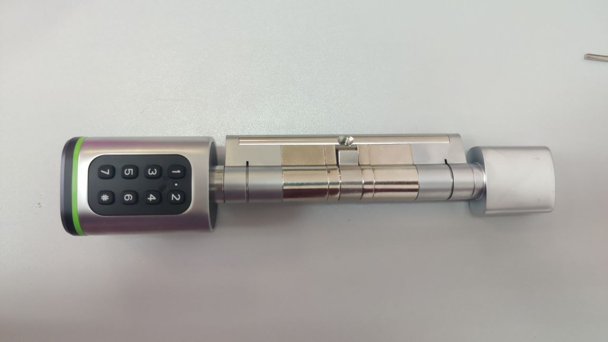Характеристика
Видеообзор
Установка Цилиндрического замка
Монтаж изделия в дверь
1. Отрегулируйте цилиндр
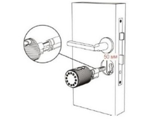2. Установите винт для цилиндра
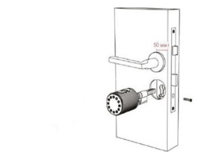3. Установите внутреннюю ручку
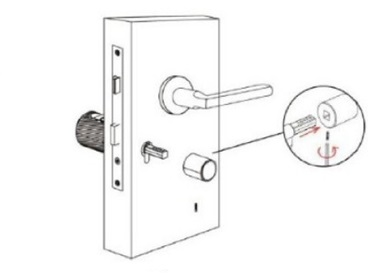4. Установка завершена
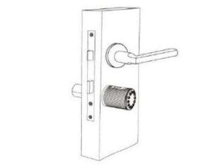Установка батарей
Замок универсален и прост как в монтаже, так и в использовании. Его можно установить, как на левосторонние,
так и на правосторонние двери; на дверь, которая открывается как наружу, так и внутрь помещения.
Замок отлично подойдет для пластиковой, деревянной и металлической двери толщиной до 100 мм.
Входит в комплект:
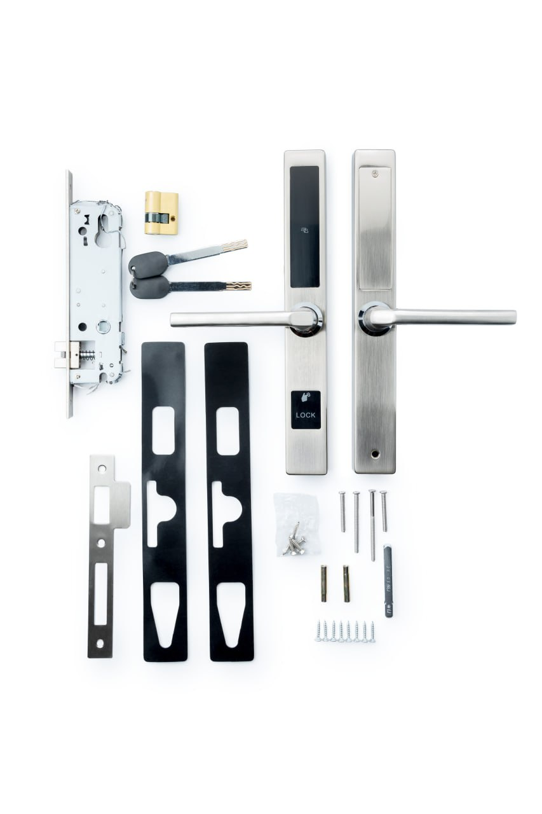Как видно из рисунка, в комплект поставки одного устройства входят:
Характеристика
Размеры
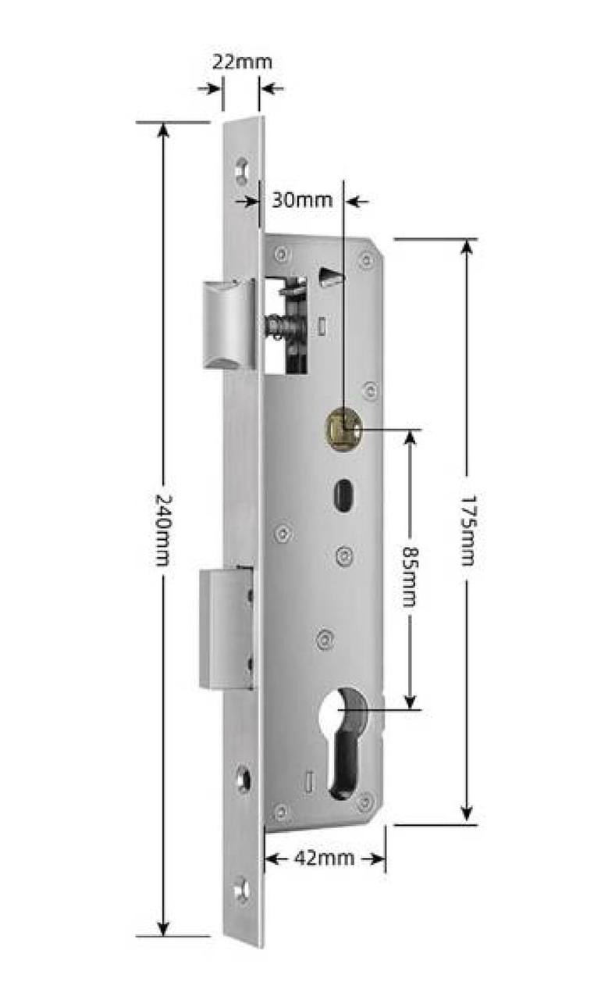Внимание !
Если корпус замка (Вашей двери) отличается по размеру от корпуса представленного замка, то можно приобрести дополнительную планку.
Установка замка
Подготовка
1. Удалите старый замок
Подготовьте дверное полотно к установке устройства – произведите фрезеровку в соответствии со схемой врезки
2. Сориентируйте ручки умного замка под открывание двери
После фрезеровки необходимо сориентировать ручку замка под направление открывания двери.
3. Направление ручки замка
Для изменения направления, необходимо ослабить крепежные винты ручек с внутренней стороны и повернуть ручку
на 180°
Внимание !
Необходимо удостовериться в том, что стрелка над втулкой расположена в положении наверх.
Монтаж изделия в дверь
1. Установка врезного замка
Зафиксируйте врезной замок в дверном полотне при помощи комплектных шурупов
2. Установка штока и гильзы
Установите на наружную пластину шток для управления защелкой и ригелем, так же гильзы для стяжных винтов
Внимание !
Шток оснащен пружиной, которую необходимо поставить в втулку внутренней пластины.
3. Установка наружной пластины в дверь
После установки уплотнительных резинок, наружную пластину необходимо установить на дверное полотно,
пропустив интерфейсный кабель через верхнее отверстие во фрезе.
4. Установка батарей
Необходимо снять с внутренней пластины батарейный отсек. Для этого потяните его вверх. После установки
батарей, необходимо поставить отсек на место. Не забудьте прокинуть кабель батарейного отсека в пластину.
5. Фиксация прижимных пластин
Необходимо установить внутреннюю пластину и зафиксировать обе прижимные пластины стяжными винтами.
Батарейный отсек также зафиксируется винтом.
Внимание !
После установки батарей и фиксации пластин, проверьте ход всех защелок (для этого поверните ручку на внутренней пластине вниз), ригеля (поднимите ручку вверх). Если механика отрабатывает плавно, без сопротивления, то сборка замка была проведена успешно и изделие готово к дальнейшей настройке.
Элегантный биометрический замок-ручка, который можно установить практически на любую межкомнатную или
входную дверь толщиной до 60мм.
Корпус замка выполнен в виде стандартной дверной ручки, и благодаря
удобному
считывателю отпечатка пальца сверху корпуса процесс открытия замка происходит быстро и без привлечения
лишнего внимания
Электронный замок для установки на входные двери без вмешательства в конструкцию двери. Замок устанавливается в виде накладного привода на стандартный евро-цилиндр с длинным штоком.
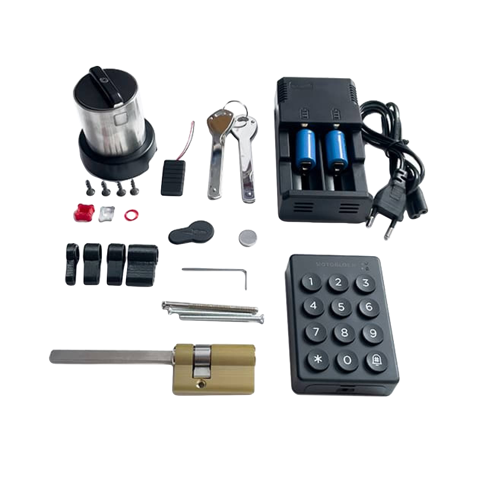Разновидности дверей к которым подходят наши замки
Алюминиевые
Деревянные
Пластиковые
Стальные
Нужно будет сделать следующие замеры и отправить вашему личному менеджеру для подбора умного замка:
В закрытом состоянии двери, измеряете расстояние от середины ручки до дверной коробки
Измеряете расстояние от дверной ручки вверх и вниз, как показано на фотографиях
Измеряете врезную часть замка (мортиза) по длине и по ширине, как показано на фотографиях
Если вы планируете приобретать цилиндрический замок, отправьте фотографию толщины двери, общую фотографию с внешней и внутренней стороны
При необходимости вы можете приобрести модуль для домофона . Нужно будет отправить фотографию домофона и трубки
После того, как вы отправите фотографии своему менеджеру они вам сообщат, какой умный замок подойдет для вашей двери.
В некоторых случаях, на дверь необходимо устанавливать дополнительную планку, которая скрывает отверстия от предыдущего замка, если он был большего размера чем новый замок.
Входит в комплект:
Как видно из рисунка, в комплект поставки одного устройства входят:
Характеристика и функционал
Сеть: WIFI 2,4G
Входная мощность: 5 В/0.5 A постоянного тока
Цвет: белый
Материал: пластик
Размер: 70x70x26 мм
Установка
Соедините Wi-Fi шлюз с сетевым адаптером и подключите к сети 220В
Внимание !
Установите шлюз не далее 3-5 метров(в идеале 2-3 метра) в радиусе прямой видимости от замка и обеспечьте ему постоянное электропитание. Рекомендуемая скорость интернет соединения, не менее 70 мбит/с
Видеообзор
Шлюз должен быть всегда подключен к розетке и гореть синим цветом постоянно.
У шлюза бывают разные состояния сигнала:
🟢 - Сигнал Отличный
🟡 - Сигнал Приемлемый
🟠 - Сигнал Слабый, возможна частичная или полная потеря функционала, связанного со шлюзом.
(Означает, что либо скорость интернета слабая, должна быть не менее 70 МБИТ, либо шлюз расположен далеко от
замка, должен быть в радиусе не менее 5м от замка)
🔴 - Отсутствуют шлюзы поблизости.
У замка пропала связь со шлюзом, причины:
1) Шлюз выдернули с розетки, тем самым он выключен.
2) Шлюз подключен к розетке, но мигает красным, то есть возможно не оплачен интернет.
3) Шлюз подключен к розетке, но мигает красным, то есть возможно проблемы в работе роутера и раздачей вай фая.
4) Шлюз подключен к розетке и мигает красным, возможна была смена пароля роутера/Wi Fi.

Предоставляет универсальный бесключевой доступ, позволяющий автоматически открывать домофон и двери подъезда при наборе номера квартиры, в которой установлен.
Монтаж чипа для автоматического открытия дверей подъезда
Внимание !
Провода от трубки остаются не подсоединенными.
Электронный мини-сейф
Надежный электронный мини сейф для ключей, который можно разместить рядом с дверью для хранения и передачи ключа от дверного замка


Простой мини-сейф (ключница)

Для хранения ключей с 4-значным кодом, выполненный из алюминиевого сплава. Кейбокс оснащен защитой от плохих погодных условий. Подходит для хранения ключей в помещении и на улице.


Идут ли батарейки в комплекте ?
Батарейки не входят в стандартный комплект замка. Для корректной работы замка необходимо ознакомиться с разделом характеристика замка .
Что делать если сели батарейки у замка ?
Дверь можно открыть металлическими ключами из комплекта.
Если ключа нет по близости, можно запитать замок при помощи PowerBank и кабеля micro-USB.
Разъем для подключения находится в нижней части замка с торца. Собственного аккумулятора у замка нет,
поэтому не стоит долго заряжать замок.
Также не стоит тянуть с заменой батареек, так как после отключения PowerBank'а замок снова отключится.
Что делать если замок открывается всегда ?
Основной причиной является неправильная сборка. Чтобы решить данную проблему, необходимо убедиться что направление метки направлено вверх. Можно ознакомиться с подробной инструкцией в разделе Установка замка
Что делать если замок не реагирует на нажатие на панель замка ?
Проверить уровень заряда замка в Личном кабинете и подзарядить при помощи PowerBank и кабеля micro-USB.
С помощью приложения Flatsharing Connect проверить наличие обновлений для прошивки замка и при необходимости - обновить прошику.
Если есть доступ в квартиру - необходимо замок перезагрузить :
Открутить верхний винт внутренней пластины замка
Открыть панель и получить доступ к батарейкам
Далее необходимо изъять одну батарейку и снова ее поставить или заменить батарейки полностью
Если доступа нет, необходимо воспользоваться металлическими ключами из комплекта и проделать шаги, которые указаны выше
Что делать если после ввода кода дверь не открывается?
Возможные причины:
Неверный код. Необходимо в Личном кабинете проверить правильность ввода кода.
Код был введен неверно несколько раз и замок заблокировался. В таком случае необходимо подождать 5 минут и снова попробовать код. Также рекомендуем создать новый код для проверки.
Замок прожужжал, но дверь не открыть - шток в замке стал неисправным из-за неправильной установки. Необходимо заснять на видео неисправность замка и отправить нам в техподдержку через телеграмм @flatsharing_support.
Вышла из строя материнская плата замка. Необходимо заснять на видео неисправность замка и отправить нам в Техподдержку через телеграмм @flatsharing_support.
Что делать если IC карты перестали открывать дверь ?
Необходимо обновить данные ic-карт :
В Личном кабинете ФШ-Бизнес перейти в раздел Оборудование.
Выбрать пункт ic-карты
Необходимо скопировать номер ic-карты. Нажать кнопку Удалить. Далее нажать кнопку + Добавить и вставить ранее скопированный номерic-карты.
Как сделать обновление прошивки замка ?
Периодически выходят обновления от производителя замков. Как только появляются задержки в работе замка, вероятно, необходимо обновить прошивку замка.
Для проверки и установки обновлений - необходимо установить приложение для замка Flatsharing Connect.
Находясь рядом с замком и при открытой двери выполните в приложении обновление прошивки.
Предлагаем Вам конакты мастеров, которые имеют опыт установки электронных замков. Но Вы можете привлечь к установке любого другого мастера.
Настоятельно рекомендуем перед установкой замка подписывать Договор на установку замка между Заказчиком (собственником замка) и Исполнителем (мастером-установщиком) . Шаблон можно скачать по ссылке ⬇️ Договор подряда на монтаж оборудования.
| Город | Телефон | Имя |
|---|---|---|
| Екатеринбург | +79920000909 | Сергей |
| Ижевск | +79127596367 | Архип |
| Краснодар | +79086610777 | Андрей |
| Калининград | +79003454911 | Алексей |
| Красноярск | +79029685021 | Роман |
| +79134480765 | Андрей | |
| Москва | +79653124772 | Радик |
| +79037260980 | Антон | |
| Нижний Тагил | +79826271400 | Николай |
| Нижний Новгород | +79092876006 | Александр |
| Новосибирск | +79133760285 | Сергей |
| Новороссийск | +79658931229 | Антон |
| +79648130918 | Александр | |
| Санкт-Петербург | +79119289120 | Дмитрий |
| +79219674663 | Александр | |
| Сочи | +79654775005 | Денис |
| +79881408080 | Денис | |
| Челябинск | +79000209773 | Владислав |
Форма обращения
ФИО клиента:
Номер телефона клиента:
Полный адрес установки: (пример: Москва, Московская, 55, кв. 55)
Под каким названием добавили шлюз:
Какой замок: (Отельный, Антивандальный, Цилиндрический, Моторлок, Универсальный, Премиум)
Фото и видео отчет установки:
Фото снаружи замка, как установлена внешняя ручка замка.
Фото изнутри замка, как установлена внутренняя ручка замка.
Фото с торца, как врезали замок.
Видео, где замок открывается при помощи механического ключа, при вводе кода, и от IC-карты.
Что необходимо иметь мастеру при себе для установки замка:
отвертка( фигурная, плоская)
болгарка
шуруповерт
плоскогубцы
клепки
набор шестигранника
мечик для нарезки резьбы
насадка под дрель для отверстий
желательно иметь при себе запчасти (шток, 4 батарейки пальчиковые)
зарядник с microUSB
болгарка
Общий обзор действий
Этапы установки
Установка замка физически. Инструкция по установке замка:
Короткие видео для различных ситуаций
как поменять направление ручки:
как поменять направление язычка:
как должен работать замок:
Необходимо определиться направлением ручки, при необходимости поменять
Не забыть поставить пружинку в замок для штока